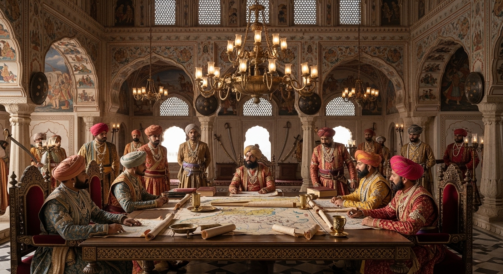

लेखक: हरिकृष्ण 'प्रेमी'
मूल विषय: अपनी मातृभूमि के प्रति असीम प्रेम, देशभक्ति और स्वाभिमान की रक्षा के लिए प्राणों का बलिदान।
पात्र परिचय:
एकांकी की शुरुआत में महाराणा लाखा (मेवाड़ के शासक) का सेनापति अभय सिंह, बूँदी के शासक राव हेमू के पास जाता है। वह राव हेमू से कहता है कि बूँदी को मेवाड़ की अधीनता स्वीकार कर लेनी चाहिए ताकि पूरा राजपूताना एक शक्तिशाली झंडे के नीचे आ सके। परंतु राव हेमू एक स्वाभिमानी शासक है। वह कहता है कि हाड़ा राजपूत किसी के गुलाम नहीं बन सकते, वे स्वतंत्र ही रहेंगे। इस बात से क्रोधित होकर महाराणा लाखा बूँदी पर आक्रमण कर देते हैं, परंतु हाड़ा राजपूतों की वीरता के सामने मेवाड़ की सेना को हार का सामना करना पड़ता है और महाराणा लाखा को भागना पड़ता है।

इस हार से महाराणा लाखा बहुत क्रोधित और अपमानित महसूस करते हैं। गुस्से में आकर वे एक भयानक प्रतिज्ञा ले लेते हैं— "जब तक मैं बूँदी के दुर्ग (किले) में ससैन्य प्रवेश नहीं कर लूँगा, तब तक मैं अन्न-जल ग्रहण नहीं करूँगा।" यह प्रतिज्ञा सुनकर सभी दरबारी और सेनापति चिंतित हो जाते हैं क्योंकि बूँदी को जीतना कोई आसान काम नहीं था। अगर महाराणा अन्न-जल नहीं ग्रहण करेंगे, तो उनके प्राणों को संकट हो सकता था।
महाराणा की जान बचाने और उनकी प्रतिज्ञा को पूरा करने के लिए सेनापति अभय सिंह एक योजना बनाता है। वह मेवाड़ के ही मैदान में मिट्टी का एक नकली बूँदी का किला बनवाता है। योजना यह होती है कि महाराणा लाखा इस नकली किले पर आक्रमण करेंगे, उसे गिराएँगे और इस तरह उनकी प्रतिज्ञा पूरी मान ली जाएगी और वे अन्न-जल ग्रहण कर सकेंगे।
मेवाड़ की सेना में वीर सिंह नाम का एक सैनिक था, जो मूल रूप से बूँदी (हाड़ा राजपूत) का रहने वाला था। जब उसे पता चलता है कि मेवाड़ के लोग उसकी मातृभूमि 'बूँदी' का एक नकली किला बनाकर उसका अपमान करने जा रहे हैं, तो उसका स्वाभिमान जाग उठता है। वह कहता है कि हाड़ा राजपूतों के लिए उनकी मातृभूमि का मिट्टी का किला भी उतना ही पवित्र है जितना कि असली। वह अपने कुछ हाड़ा साथियों के साथ उस नकली किले के अंदर चला जाता है और महाराणा लाखा की सेना का डटकर मुकाबला करता है। एक नकली किले की रक्षा करते-करते वीर सिंह और उसके सभी साथी अपने प्राणों का बलिदान दे देते हैं।

वीर सिंह के इस बलिदान को देखकर महाराणा लाखा स्तब्ध रह जाते हैं। उनकी आँखें खुल जाती हैं। वे महसूस करते हैं कि जिस भूमि के लोग एक नकली किले की रक्षा के लिए भी अपने प्राण दे सकते हैं, उस भूमि को कभी जीता या गुलाम नहीं बनाया जा सकता। महाराणा लाखा का अहंकार टूट जाता है, वे वीर सिंह के शव के पास जाकर उसके चरणों की धूल माथे से लगाते हैं और बूँदी से हमेशा के लिए शत्रुता समाप्त करने का संकल्प लेते हैं।
इस एकांकी का मुख्य उद्देश्य देशभक्ति और मातृभूमि के प्रति असीम प्रेम की भावना को जगाना है। लेखक ने वीर सिंह के माध्यम से यह संदेश दिया है कि जन्मभूमि स्वर्ग से भी महान होती है। चाहे वह मिट्टी का एक नकली रूप ही क्यों न हो, किसी भी सच्चे देशप्रेमी के लिए उसकी मातृभूमि का अपमान असहनीय होता है। इसके साथ ही यह एकांकी आपसी कलह और घमंड (जैसे महाराणा लाखा का अहंकार) से दूर रहकर एकता और स्वाभिमान के साथ जीने का संदेश देती है।